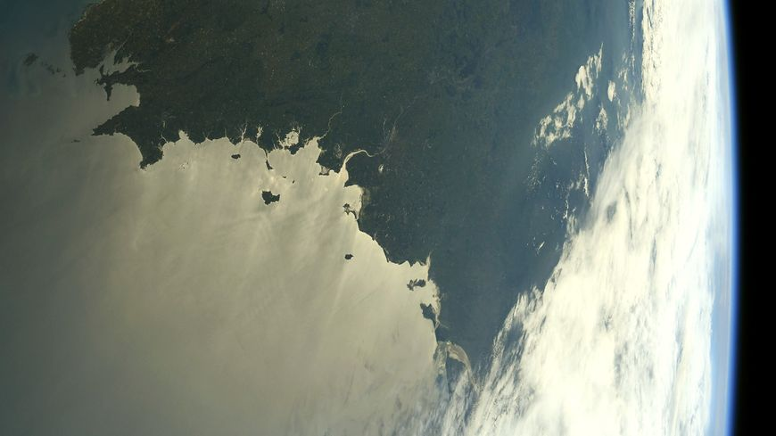
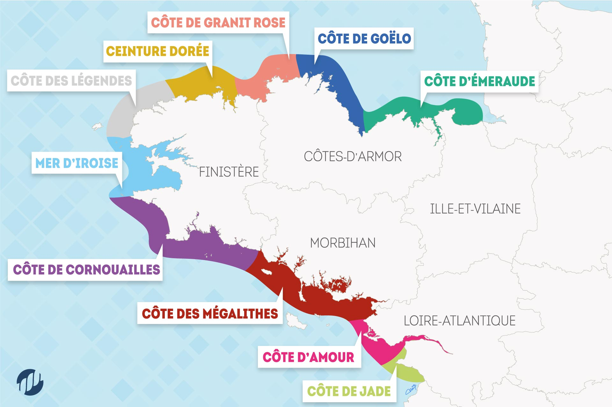
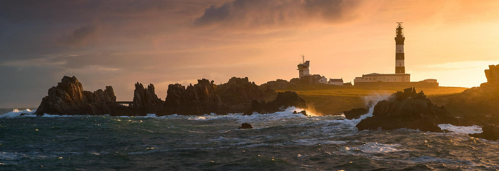
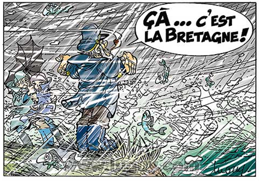

Son histoire
Finis terrae c’est le nom latin du Finistère, qui le place à la « fin des terres ».
Penn ar bed c’est son nom breton, qui le place au début ou à la pointe du monde…
Aujourd’hui réputé pour sa qualité de vie et son dynamisme économique, le Finistère compte
plus de 900 000 habitants particulièrement fiers et attachés à leur territoire. Le département
est un acteur majeur de l’histoire, de l’art de vivre mais aussi du dynamisme et de la modernité en Bretagne.
Le Finistère a été traversé par divers courants historiques qui ont laissé des traces de leur passage.

Sa position géographique

Le Finistère est situé à l'extrémité ouest de la Bretagne. Il est bordé au nord, à l'ouest et au sud par la Manche, la Mer Celtique (intégrant la mer d'Iroise) et l'océan Atlantique.
Premier département côtier de France, il compte 117 communes littorales sur 282, soit plus d'un dixième des communes littorales françaises, et 1 250 km de côtes.
La côte est très découpée et se divise en côtes ayant chacune leurs spécificités et leurs caractéristiques


Sa météo
Le climat du Finistère présente les caractéristiques d'un climat tempéré océanique sous l'influence du Gulf Stream et des perturbations atlantique. Il se caractérise généralement par des hivers doux et des étés frais. Les précipitations sont assez abondantes et étalées sur toute l'année, avec un maximum durant les mois d'hiver. Elles augmentent sensiblement à l'intérieur des terres et sur le relief. Alors que l'île d'Ouessant reçoit moins de 800 mm de précipitations par an, les sommets des monts d'Arrée reçoivent plus de 1 500 mm. Les gelées ainsi que la neige sont rares, surtout dans les îles.
La présence du vent est une autre caractéristique de ce climat....!
